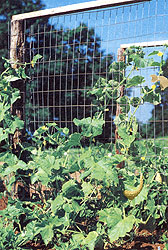
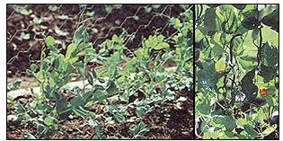
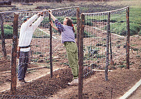
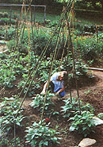
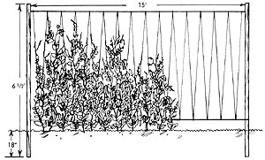
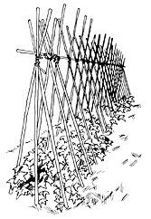
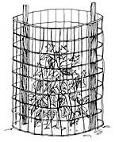
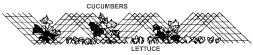
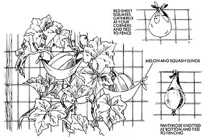

Spring, summer or fall, many garden crops grow best when they grow up-straight up.
A FEW YEARS BACK I WAS LEADING an old friend through my garden, all the while bemoaning my lack of growing space, when he suddenly interrupted me and asked, "Why do people build skyscrapers?" What this had to do with my overcrowded garden, I hadn't a clue. "So they can cram a lot of people into a place without using up much ground room?" I ventured.
"Exactly. Sort of like your garden, wouldn't you say? You've got acres of unused space-in the air."
My friend was right. The extra room I needed was literally right in front of my eyes. I started "growing up" and soon found that gardening in the air has many benefits. It increases yields: Most climbing vegetable varieties bear heavier and longer than bush types. By providing better aeration, it can reduce disease. In one study, North Carolina State University researchers found that trellised cucumbers (which also had the bottom foot of foliage pruned) produced much healthier plants, and twice as many fruits, as untrellised vines. High-rise planting also creates cooler microclimates for understory crops. And it adds visual appeal to the overall garden.
One more thing: Most bush varieties were bred from climbing ones, and many growers think the original climbing cultivars have better, old-fashioned flavor. As a seed-saver friend of mine once put it, "Why stoop to pick inferior-tasting peas?" Of course, short varieties do offer some conveniences. Since those bush beans, dwarf tomatoes and other determinate varieties cease growing at a set height, they're often able to stand on their own. And they bear all at once rather than over an extended period. But to my mind, the rewards of trellising are well worth the efforts.
As a seed-saver friend put it, "Why stoop to pick inferior-tasting peas?"
Susan's favorite, the sturdy woven-wire trellis, is durable enough to last for years.
This year Susan and Franklin are also experimenting with lightweight and easy-to-install nylon netting.
There's something special about watching a tipi of greenery rise before your eyes.
For plants to grow up a trellis or other support, you first have to build it. Most have two parts-the main structural framing and some form of internal netting.
Some common supports are wood posts, metal stakes and thick-walled rigid PVC pipe. Rot-resistant black locust, cedar and redwood all make long-lasting wooden posts, but almost any sapling tree trunks (three to five inches in diameter) will give several years of service-more if brought inside for the winter. Treated posts are also available commercially. For each post, dig a two-foot-deep hole (a posthole digger is the best tool for this job), set the support in place, and tamp the dirt around it with a stout pole or rod. Horizontal slats nailed to the underground portion of these posts will add extra stability in sandy soil.
Don't forget bamboo. The Oriental grass is unbelievably strong, yet its hollow chambers give it great rot resistance and light weight. If you have a place where it can spread (and it will), consider planting your own patch of this versatile, free building material.
Steel posts are less aesthetic than wooden ones but are quicker to install and move. Those with tabs or holes punched down their centers make wire fencing easier to secure.
Thick-walled rigid PVC pipe makes solid end or corner posts when buried two feet deep. With added elbows and tees, it can also provide the basic framework for cages. Gardeners who make cloche hoops from flexible PVC can add some horizontal pipe braces for tomato supports, or nylon netting for other vine crops.
Vinyl-coated wire, often called clothesline wire, can work for horizontal support. It's very strong, flexible and nonabrasive.
Many people rig up their trellis interiors out of string. If you have a neighbor who feeds hay to his or her livestock, you've just found all the free baling twine you can use. Heavy-duty jute, nylon seine twine and cotton cable cord are available commercially-jute generally being the least expensive. Avoid kite and package string; they aren't stout enough to handle the weight of growing plants. I tend to use natural fibers myself because they simplify fall cleanup. No separating of vine from twine: Just compost the whole shebang.
Nylon netting that lasts five years or more is available from garden supply stores and mail-order companies m at reasonable prices. It usually comes in five-foot widths and varying lengths.
Several sorts of metal fencing are also popular trellis material. Galvanized wire fencing (often called utility fabric, welded fencing or woven wire) should last anywhere from five to 10 years depending on your locale. People living near ocean coasts, in particular, find that even galvanized metal fencing deteriorates quickly in salt air (and they may, therefore, want to look into more-expensive plastic-coated fencing).
Concrete reinforcing wire is cheaper, but it rusts more quickly because it isn't galvanized. Still, it lasts a few years under most conditions. With all wire fencing, be sure the holes are at least four inches square so you can reach through to harvest. And to avoid corrosion at contact points, match staples or nails to the fencing:This means using galvanized staples or nails for galvanized fencing, and iron staples or nails for non-galvanized fencing.
I know many a home gardener has used chicken wire for a trellis, but I don't recommend it. Sure, the price is low, but chicken wire is too flimsy for circular freestanding cages, has too small a mesh to fit your hand through and is too effective for trellises. Too effective? Well, yes. I'd far rather untangle a wad of fishing line than have to spend the time and effort needed to remove a fenceful of spent vines from chicken wire.
There's also a whole slew of miscellaneous trellis materials. Snow fencing, last year's sunflower stalks, bicycle rims, bedposts, aluminum chairs sans webbing-soon everything starts looking like a potential plant supporter.
Netted or wire trellises (for all climbing crops). To make one of these, first sink some wood, metal or PVC posts as anchors. Space these five feet apart if you're using commercial nylon netting, and up to 10 feet for wire fencing. A support bar across the top is also helpful and can be made from a sapling, a long piece of bamboo, a 1 X 2 strip of wood or some plastic-coated wire. Secure the mesh in place with a staple gun, chicken-wire staples or strong line.
A six-foot-tall trellis (which means your posts will have to be eight feet long) is a good height for most crops. Unfortunately, most netting and fencing seems to come in four-to five-foot widths. That leaves a gap between the fence and the ground of a foot or more that pea, bean and cuke plants can't jump. To rectify this, attach a narrow strip of chicken wire along the bottom.
String trellis (best for beans and peas). Small farms often use string trellising because it's cheap (they buy polypropylene twine in bulk) and doesn't need to be stored over the winter. It's also popular with home gardeners due to the availability of baling twine or inexpensive cotton cording.
To make your own string trellis, sink posts eight to 10 feet apart just as you would for wire trellises. Tightly secure a length of vinyl-coated clothesline wire along both the top and the soil line. Next, tie of your ball of string at one end. Pass it under the bottom wire, then over the top one, weaving all the way across until you have what looks like a zigzag spider's web. The string should be from four to six inches apart at its widest point. An extra loop around each wire keeps the string from sliding around and bunching up if the clothesline should go a little slack.
Tipis (for beans and tomatoes and, if wrapped with string, squash and melons). To construct a pole tipi, cut three or more 12-foot bamboo stalks or straight saplings and lay them down side by side. Lash them together about a foot from the top in an in and-out pattern-as if you were constructing a raft. Then pull them into a tight bundle, wrap your line around the outside a few times, and tie it off. Stand the bundle upright, pull the lower ends out into a tripod, and push them two feet into the ground for sturdiness. A crowbar or iron rod can help start holes in hard-packed soil.
Let's face it: A commercial tomato cage is as tight as my ninth-grade jeans.
Tipi trellis (for the same crops as ordinary tipis). Stretch your tipis into A-frames. Set up a three-legged tipi at each end of a row, and connect them with a long support bar across the top. Along either side, lean in poles (spaced 12 inches apart), and lash them to the top post. Both sides make good vine trellises, while the shaded area underneath can then become the perfect spot for extending the salad-green season or starting fall crops.
Wire cages (for all climbers except pole beans). Most of us think of circular cages as being just for tomatoes. But don't forget that squash and melons also thrive in the cages if you add some crosswise sticks for extra support. And cucumbers and peas enjoy climbing up round walls just as much as straight ones.
I know you can buy cages for tomatoes, but let's face it, store-bought ones are simply too small. Before the first fruit is harvested, the plants are out the top and dangling over the sides. (I imagine an indeterminate tomato plant in a commercial cage feels about like I would trying to fit into my ninth-grade jeans.) Thank goodness, it's a simple matter to make your own tomato cages. They'll be ample enough to house a bumper crop-and last for years.
A six-foot section of wire fencing makes a two-foot-diameter circular cage. Cut the sections with wire cutters, snipping just after a vertical wire. This leaves one edge smooth and the other with protruding wires that can be bent back to form attaching hooks. You might also clip of the lower horizontal wire to give you wire ends to poke into the ground. Even so, for stability's sake, you'll need to drive some short stakes into the ground to anchor the cage. If you want to be absolutely sure the wire holes are large enough to reach into (and pull out that lunker tomato), you might cut a few extra-large "windows" in the wire.
Cages can also be used as mini-greenhouses in spring. Wrapped with clear plastic that's secured with clothespins, the cage will help protect young transplants inside.
Peas: Peas climb by way of skinny, coiling tendrils along the length of their vines. This means that thin materials like string, wire or even old brush are easiest for the plants to cling to. Just be sure to have the support in place early on. Pea seedlings need something low to grab almost as soon as they emerge.
If your trellis isn't in place, they'll grab each other.
Beans: While peavines use tendrils to anchor their upward growth, pole-bean vines wrap their entire selves around nearly anything vertical. For this reason, tipis and string trellises have long been synonymous with pole bean culture. But netted and wire-fence trellises also work well. The beans simply ignore whatever is horizontal.
Tomatoes: There are probably more ways to get tomato vines off the ground than there are ways to serve the results. Since they don't actually climb but must be tied, almost any support will do. I've used tipis, bamboo scaffolding, Hula-Hoops and even an old bedpost-with nary a peep from the patch.
Securing each vine to a single stake sounds like the simplest way to go, but actually it requires much tying and pruning. And aside from being a chore, pruning lowers yields and encourages sunscald. If you do stake, use rags or pantyhose cut into strips (not string). Such stretchy ties won't cut plant stems when secured loosely. Also, set the stakes downwind from prevailing breezes so that the plant is blown towards the support instead of away from it.
If you already trellis your peas, why not just set your tomato starts in the adjacent rows? Then when the peas come out, you can use trellis-length strings to hold the tomatoes against the same structure.
Cages make wonderful tomato props-some studies show that caged tomatoes outyield staked ones by 50%. Grow one plant inside each enclosure, or three around the outside. Either way, mulch inside the cage to eliminate weeding through the fencing.
Cucumbers: Cukes are fairly good climbers that seem to do best on a lattice-type support such as netting, wire fencing or wood laths. Still, they'll climb nearly anything if tied here and there. Their thick, hollow stems are easily removed at season's end-which makes them one crop that is easy to clean off chicken wire. And don't forget the longer, serpentine Oriental cukes (burpless, crisp and sweet), which straighten out a bit when grown vertically, yet still look enough like snakes to startle the unwary gardener.
Stretch your imagination a bit. Gardeners have been known to raise their future pickle crop on a tunnel (fencing arched over the framework of a cloche), a campsite ("pup tent" trellises set side by side) and even a cave (a defunct backyard jungle gym covered with chicken wire).
Melons and squash: If you'd like to look your cantaloupes, watermelons, honeydews, pumpkins or winter squash right in the eye, then assist these halfhearted climbers by tying their stems-again, with rags or pantyhose-to a strong framework. To aid your levitation efforts, choose small-fruited varieties: Under four pounds seems best.
Use little slings, hammocks or homemade holders to support the weight of the fruits, and install these early on to prevent stem breakage. Pantyhose, knotted at one end and tied to the support at the other, make a stretchy holder. Old bed sheets or other scrap material can be cut into square slings. Gather up all four ends, and tie them to the wire fencing. And used butter tubs make nice hanging pots. Punch four equidistant holes around the upper rim, then attach a 12-inch piece of heavy twine to each hole. Knot the pieces at the top, and attach them to the trellis.
Some other, unusual, crops can also be grown vertically. Dolichos lablab (or hyacinth bean), a beautifully ornamental legume with purple stems and lilac blossoms, is a coveted vegetable in the cuisines of Indochina and Taiwan. Malabar spinach (also called basella or summer spinach) is another ornamental Oriental. Yard-long (or asparagus) beans are as tasty as they are lengthy. There are also attractive but strong-flavored Chinese bitter melons, crunchy-rooted jicama and even ornamental gourds.
The crop choices are as broad as their possible supports. Which brings us to true confession time: What's my own favorite trellis system? Well, I'm partial to welded wire on wood posts. I've left those sturdy structures in place year-round out of sheer laziness-and after six years, they're as strong as ever.
Oh, and speaking of laziness, if you're still not convinced to give high-rise planting a try, think on this: All that growing space in the air is space you'll never have to weed!
|
 Susan's favorite, the sturdy woven-wire trellis, is durable enough to last for years. |
 A lower foot-wide ship of chicken wire helps August peas start on their way up . . . while summer scarlet runner beans are reaching fruition. |
 This year Susan and Franklin are also experimenting with lightweight and easy-to-install nylon netting. |
|
 Easy to assemble, the string trellis is the classic support for pole beans. |
 Give a pole tipi the accordion treatment-and you get the versatile tip! trellis. |
 A ""pup tent"" trellis is an attractive way 1o raise two crops in one space. Bottom: Even melons and squash can be grown ""up""-if each fruit gets ifs own support hammock. Facing page: A wire tomato cage. |
|
 |
 |
 |